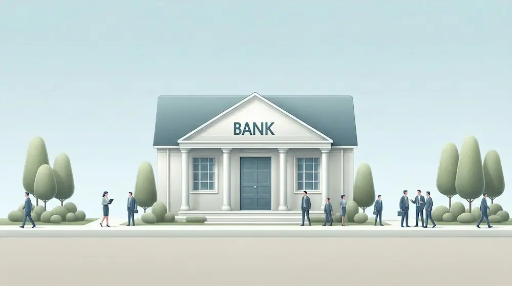

Te explicamos paso a paso cómo conseguir dinero para tu casa prefabricada en Canarias.
1. Subvenciones Gobierno
El Gobierno canario tiene un fondo de 1,5M€ para ayudar a que se construyan más casas prefabricadas modernas y que ahorren energía. Si tu casa es pequeña (menos de 150m²) y tiene certificado A (muy eficiente), puedes recibir hasta 25.000€ sin devolverlos.
Quién puede:
- Jóvenes <35 años
- Familias monoparentales
- Discapacidad >33%
- Hasta 25.000€ no reembolsable (10% precio casa)
Proceso simple:
- Inscríbete Vivienda Protegida (web Gobierno)
- Presenta proyecto prefabricada (arquitecto)
- Aprobación 45 días
- Dinero directo constructor
Ejemplo: Pareja 32 años Tenerife, 18.000€ ayuda para 120m² media.
2. Ayudas cabildos
Cabildos Insulares = dinero LOCAL (más fácil de conseguir):
| Cabildo | Ayuda máxima | Para quién | Plazo |
|---|---|---|---|
| Gran Canaria | 20.000€ | <40 años, 1ª vivienda | Abierto |
| Tenerife | 18.000€ | Familias numerosas | Mayo 2026 |
| Fuerteventura | 15.000€ | Autoconstrucción | Continuo |
| Lanzarote | 12.000€ | Vivienda rural | Abierto |
| La Palma | 22.000€ | Reconstrucción post-volcán | Prioridad |
Ventaja cabildos: Trámites 30 días vs Gobierno 90 días.
¿Quieres saber los precios reales de casas prefabricadas en Canarias? Consulta nuestra guía completa.
3. Hipotecas prefabricadas
Los bancos prefieren casas prefabricadas porque tienen precio fijo garantizado, se terminan en 4-6 meses (no años) y llevan menos riesgo de retrasos o sobrecostes.
| Banco | % Financiación | TIN | Prefabricada |
|---|---|---|---|
| BBVA | 100% | 2,45% | ✅ Especial |
| CaixaBank | 95% | 2,60% | ✅ 0% comisiones |
| Santander | 90% | 2,50% | ❌ Solo tradicional |
| Cajamar | 100% | 2,35% | ✅ Rural perfecta |
Clave: Firma contrato precio fijo + seguro decenal = banco dice SÍ rápido.
Te conectamos con constructoras que te ayudan con el proceso
4. Deducciones IRPF
RECUPERA 20-30% precio casa con eficiencia energética:
Deducciones 2026:
- Eficiencia A: 20% obras (máx 5.000€/año)
- Placas solares: 40% (máx 7.500€)
- Aislamiento SIP: 20% (máx 3.000€)
- Bomba calor: 40% (máx 3.000€)
Ejemplo: Casa 140m² A++ con solar = 15.400€ devueltos IRPF 4 años.
5. Programas insulares
FONDOS URGENTES 2026 post-erupciones + vivienda asequible:
- Plan Reconversión La Palma: 100% financiación + 10.000€ ayuda
- VPO Gran Canaria Sur: Precio limitado 1.200€/m² + 15% ayuda
- Jóvenes Tenerife Norte: Entrada 5% + 20 años plazo
- Autoconstrucción Fuerteventura: Kit prefab + supervisión técnica
Caso real: Familia La Palma, prefab 90m² 100% financiada + 12k€ ayuda.

6. Errores financiación
Errores que te dejan SIN casa:
- ✅ Evita: Pedir tradicional si quieres prefab (banco no entiende)
- ✅ Evita: No combinar subvención+hipoteca (pierdes 25k€)
- ✅ Evita: Olvidar deducciones IRPF (regalas 10k€ Hacienda)
- ✅ Evita: Cabildo equivocado (Tenerife no da jóvenes)
- ✅ Evita: Sin seguro decenal (banco dice NO)
7. Guías y FAQs
Explora más temas:
- Permisos y normativa en Canarias
- Materiales según el clima de tu isla
- Precios reales en Canarias en 2026
- Casa prefabricada vs tradicional
Preguntas Frecuentes
Sí. BBVA/Cajamar dan 100% con contrato precio fijo + aval constructor. Entrada 0€.
Sí, si es 1ª vivienda habitual + <35 años o familia monoparental.
20.000€ para menores 40 años, 1ª vivienda prefabricada VPO. Solicitud online.
Sí, 40% IRPF + 7.500€ Next Generation EU. Instalación obligatoria eficiencia A.